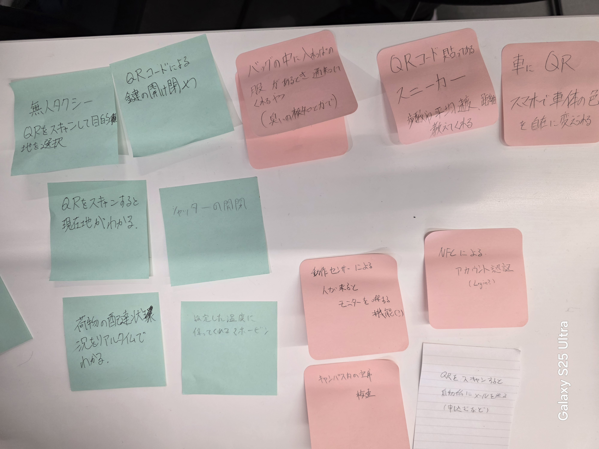

-IOTとは何か-
IOTとは、Internet of Thingsの略称で、「モノのインターネット」という意味。
従来インターネットに接続されていなかった物が、ネットワークを通してサーバーやクラウドサービスに接続され、相互に情報交換をする仕組みのこと。
*参考文献*
awsホームページ
-実験した動画-
動画はこちらから↓
Lチカ
-グループワークのポストイット-

-IOTでできそうなこと-
・いつでもどこでもリアルタイムで荷物を追跡できる荷物タグ
ECサイトなどで買った荷物を、中継地点や営業所以外にも、現在〇〇県の国道〇〇号を走っているなど、自分の荷物が24時間追跡可能なもの。
スマホを使って遠隔で監視できるため、あると安心感があるし便利だと思った。